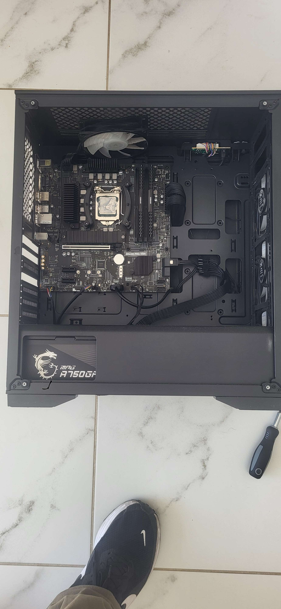

Le transfert en quelques mots
Ce projet consistait à récupérer les composants de mon ancien boîtier et à les installer
dans un nouveau boîtier DeepCool. L'objectif était de repartir sur une base plus propre,
mieux ventilée et plus agréable à utiliser au quotidien.
Le transfert a été réalisé avec méthode afin de protéger la carte mère, la carte graphique
et les différents branchements pendant chaque étape du montage. Les composants ont également
été nettoyés pour retirer la poussière accumulée et améliorer leur refroidissement.
Résultat obtenu
- Composants démontés puis réinstallés dans le nouveau boîtier.
- Composants et ventilateurs dépoussiérés avant le remontage.
- Carte graphique et système de refroidissement remis en place.
- Câbles réorganisés pour faciliter la circulation de l'air.
- Ordinateur final fonctionnel avec un éclairage bleu visible en façade.
Avant / Après
La comparaison montre l'état de l'ancien boîtier avant le démontage, puis le résultat après le transfert des composants.
Avant — ancien boîtier
Configuration ouverte avant le retrait des composants.

Après — nouveau boîtier
Ordinateur remonté et installé dans le boîtier DeepCool.